Ust. H. Ifdoni Nur Syamsi
Founder Hamasah International
- Arah dan prioritas, termasuk anggaran untuk AI
- Periode penerimaan tiap tahun
- Kapan sistem boleh dibuka untuk wali dan santri
Di halaman ini saya rangkum apa saja yang sudah jadi, termasuk semua yang diminta di rapat: monitoring paspor dan iqamah, kegiatan dan rapor bulanan, surat, KPI musyrif, inventaris dan AC patungan, sampai pengingat tagihan. Gambar-gambarnya saya screenshot langsung dari aplikasinya, jadi yang Ustadz lihat di sini memang yang sudah jalan.

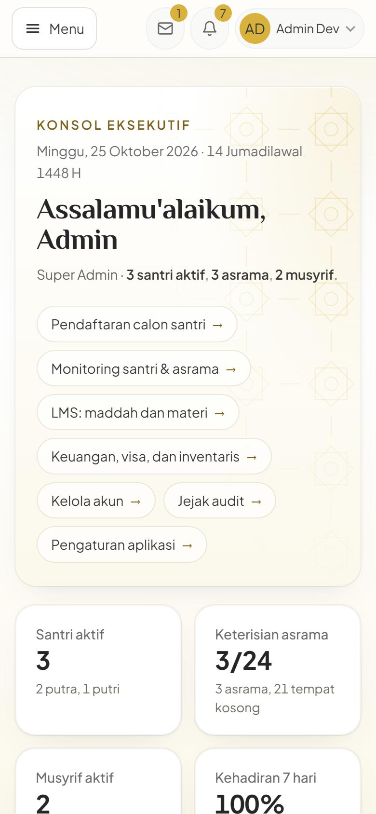
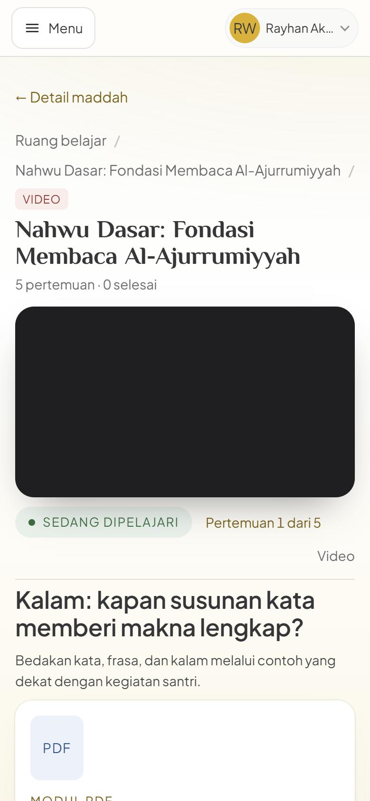
Screenshot dari aplikasinya, pakai akun contoh.
Semua permintaan di catatan rapat sudah masuk ke aplikasi dan sudah jalan di hamasah.vercel.app. Gambar di bawah screenshot langsung dari aplikasinya, pakai akun dan data contoh.
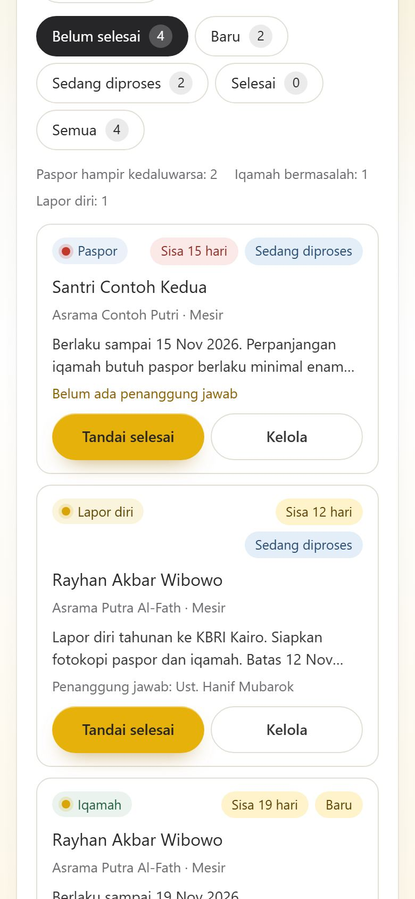
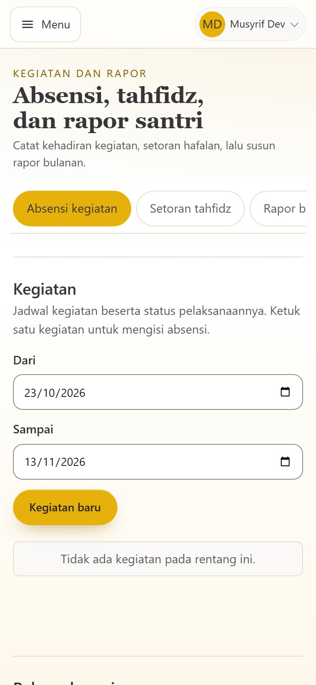
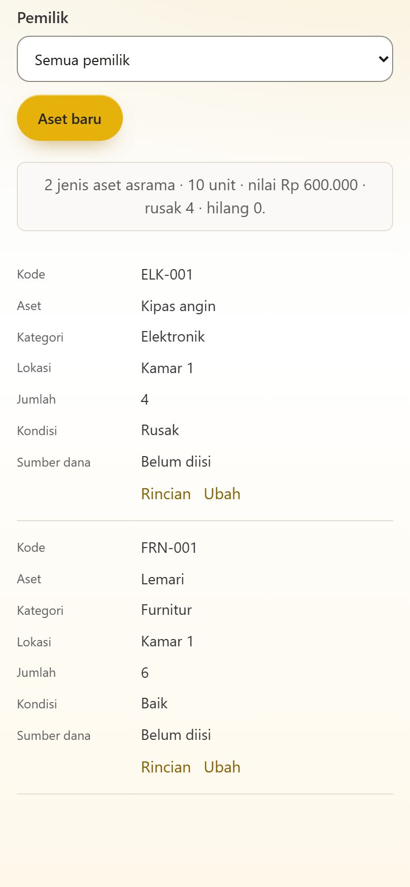
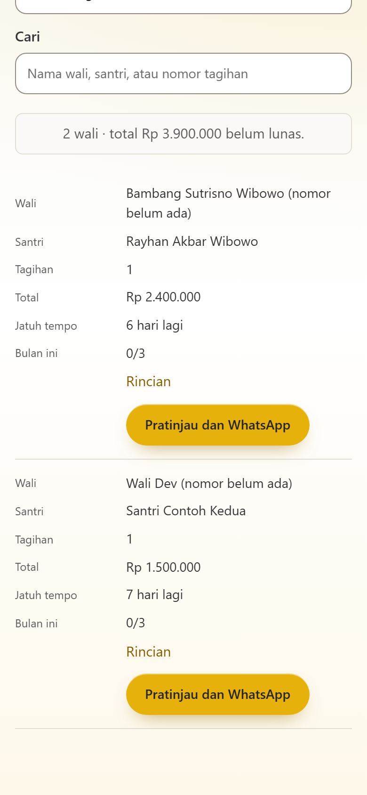
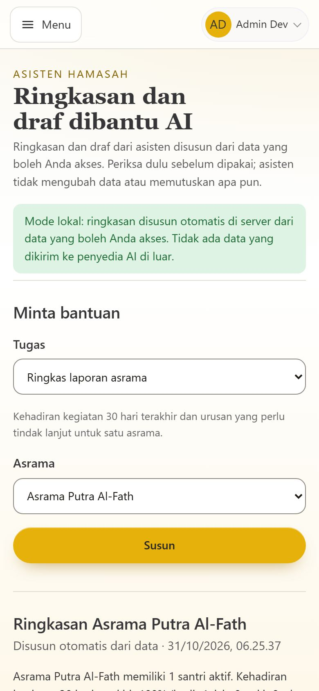
Ada beberapa hal yang sengaja belum saya putuskan sendiri, misalnya biaya AI, data kesehatan santri, aturan akun, dan kapan sistem ini dibuka untuk wali. Itu wewenang beliau berdua. Bagian saya menyiapkan bahannya dan menjalankan sistemnya.
Founder Hamasah International

Direktur Hamasah International Regional Mesir
Satu santri diurus banyak orang, dan jam kerjanya beda-beda. Kalau catatannya ada di satu tempat, wali tidak perlu menunggu dikabari, musyrif tidak perlu lapor dua kali, dan pimpinan bisa langsung lihat apa yang perlu ditangani.
Tahap pendaftaran, berkas yang masih kurang, sampai jadwal berangkat, bisa dicek sendiri kapan saja.
Sholat berjamaah, setoran hafalan, izin keluar, materi, dan nilai. Semuanya dicatat di tempat yang sama.
Tiap tagihan dan kuitansi ada nomornya sendiri. Kalau ada yang dikoreksi atau dibatalkan, alasannya ikut tersimpan.
Visa yang sebentar lagi habis, tagihan yang lama menunggak, atau pendaftar yang belum diperiksa, langsung kelihatan.
Sebelum punya akun, calon santri dan wali buka website dulu. Di situ mereka bisa baca program dan biaya, daftar, tanya ke asisten, lalu cek sendiri pendaftarannya sudah sampai mana. Gambar di bawah saya ambil dari hamasah.vercel.app. Khusus cek status, saya pakai pendaftar contoh.
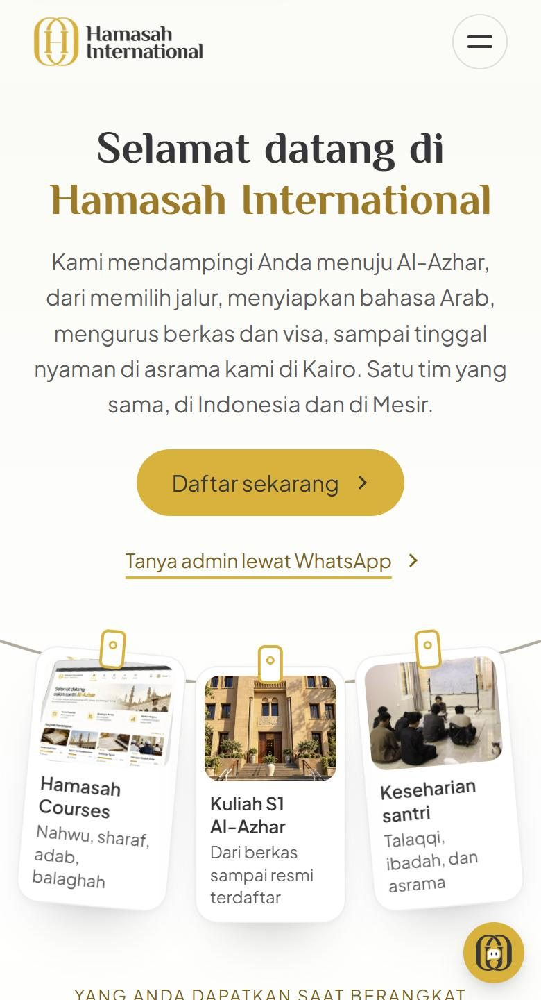
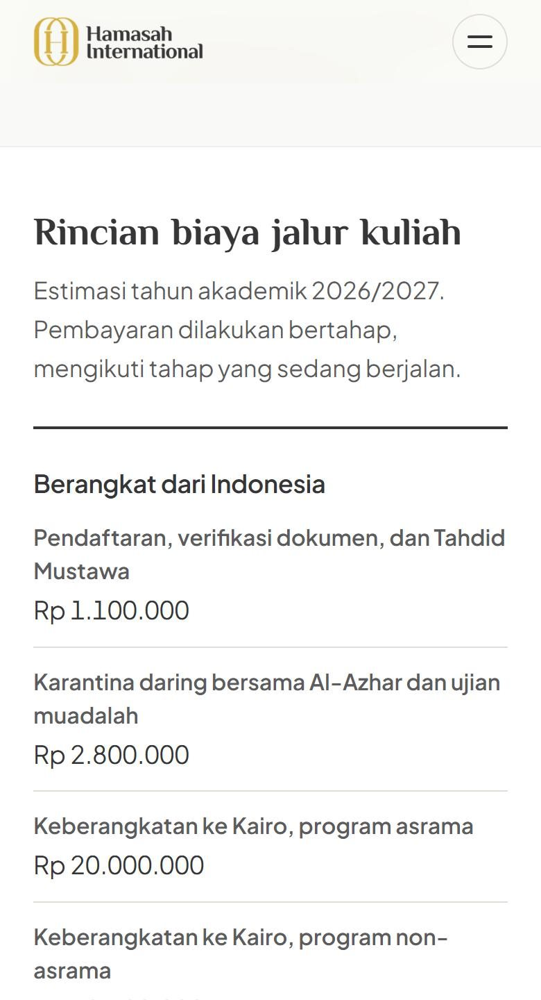
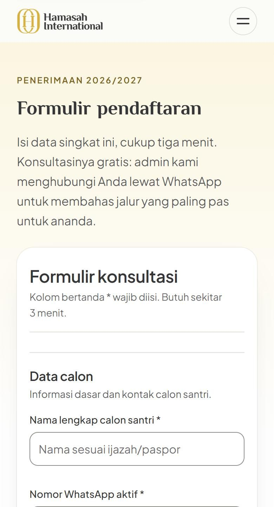
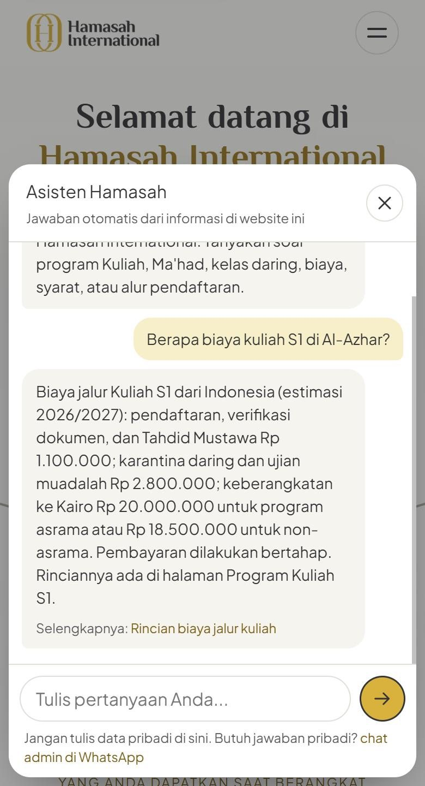
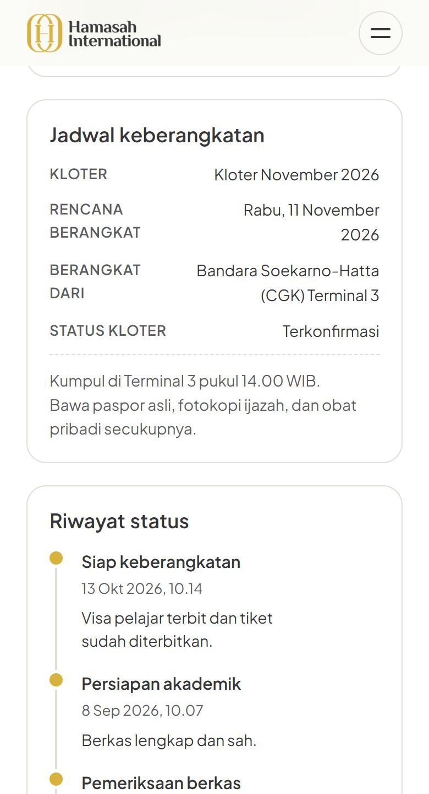
Silakan pilih perannya. Semua screenshot di bawah pakai akun contoh, jadi nama dan angkanya bukan data asli. Angka bulat di layar menunjuk bagian yang paling sering dipakai.
Ini halaman Pantau Ananda. Kalau anaknya lebih dari satu, semuanya tetap di satu akun.
123Begitu masuk, santri langsung lihat apa saja yang ada hari ini. Bagian lain dibuka lewat tab, jadi halamannya tetap pendek di HP.
 1234
1234Ini tab Presensi asrama di menu Monitoring.
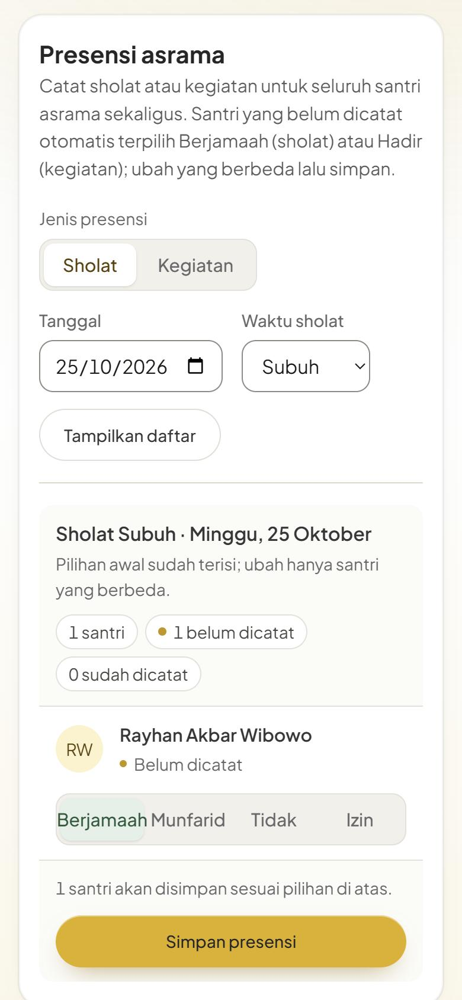
12345Ini halaman Kelola Maddah.
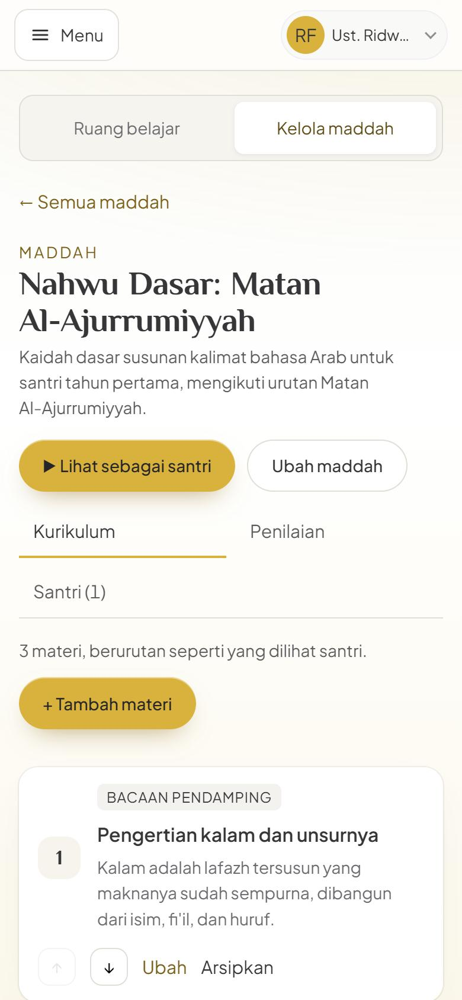
12345Ini daftar calon santri di menu Pendaftaran.
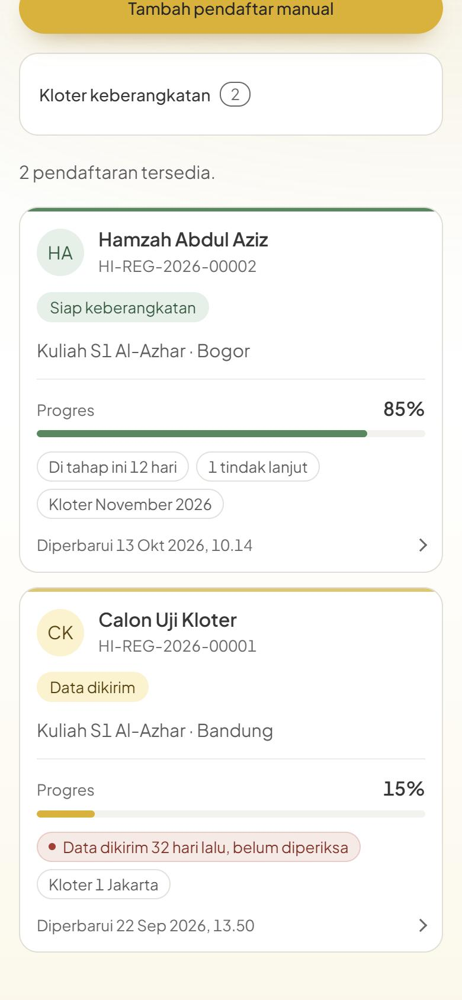
1234Ini daftar invoice di menu Keuangan & SPP.
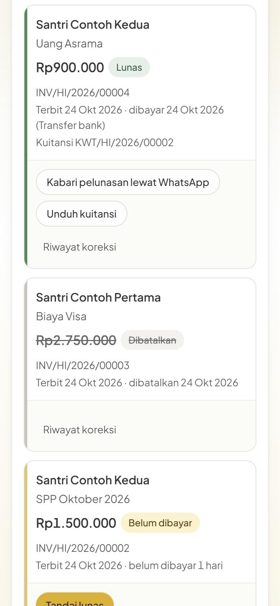
12345Ini Portal Utama untuk Super Admin.
Di tiap maddah, santri tinggal pilih pertemuannya. Videonya diputar di dalam portal, modul PDF-nya bisa diunduh, dan kalau sudah selesai tinggal ditandai. Guru bisa lihat siapa saja yang sudah selesai.
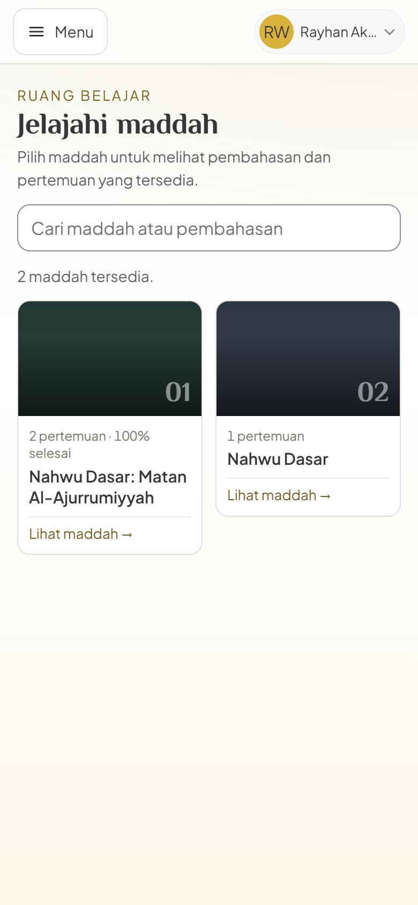
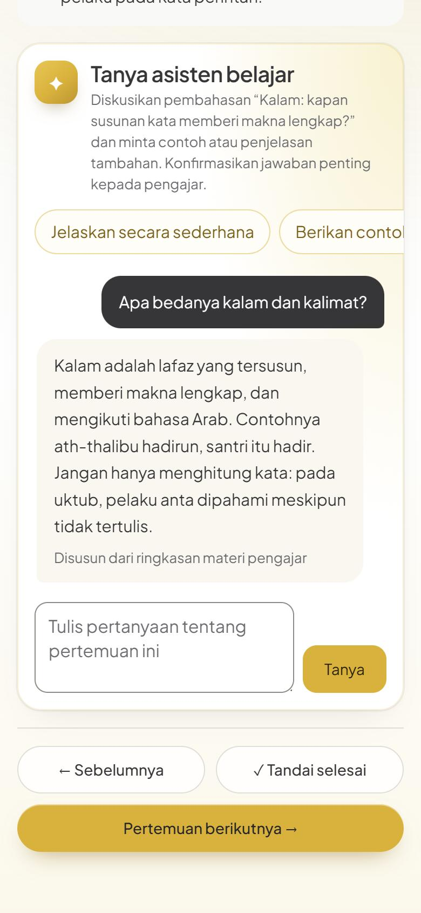
Asistennya saya batasi supaya cuma menjawab dari isi website dan materi ustadz pengajar. Pemakaiannya juga dibatasi per jam dan per hari, jadi biayanya tetap terkontrol. Kalau layanan AI-nya sedang bermasalah, asisten masih bisa menjawab pakai jawaban yang sudah tersimpan di sistem.
Di tiap pertemuan, santri bisa minta dijelaskan lebih sederhana, minta contoh, atau minta ringkasan. Jawabannya diambil dari ringkasan materi pengajar.
Calon santri dan wali bisa tanya soal biaya, syarat, atau program kapan saja. Kalau pertanyaannya harus dijawab orang, asisten mengarahkan ke WhatsApp admin.
Musyrif cukup cerita singkat soal hari itu, nanti AI menyusunnya jadi catatan per santri. Sebelum disimpan, musyrif tetap mengecek dulu. Yang dikirim ke AI cuma ceritanya dan nama depan santri.
Merangkum laporan satu asrama, dokumen yang perlu ditindaklanjuti, atau perkembangan santri, dan menyusun draf pengumuman. Nama santri diganti alias sebelum dikirim ke AI. Asisten tidak mengubah data apa pun, dan drafnya baru terbit setelah diperiksa.
Wali dan bagian keuangan tidak perlu bikin dokumen dari nol. Isinya diambil dari catatan yang sudah ada di sistem. Contoh di bawah saya buat dari akun santri contoh.
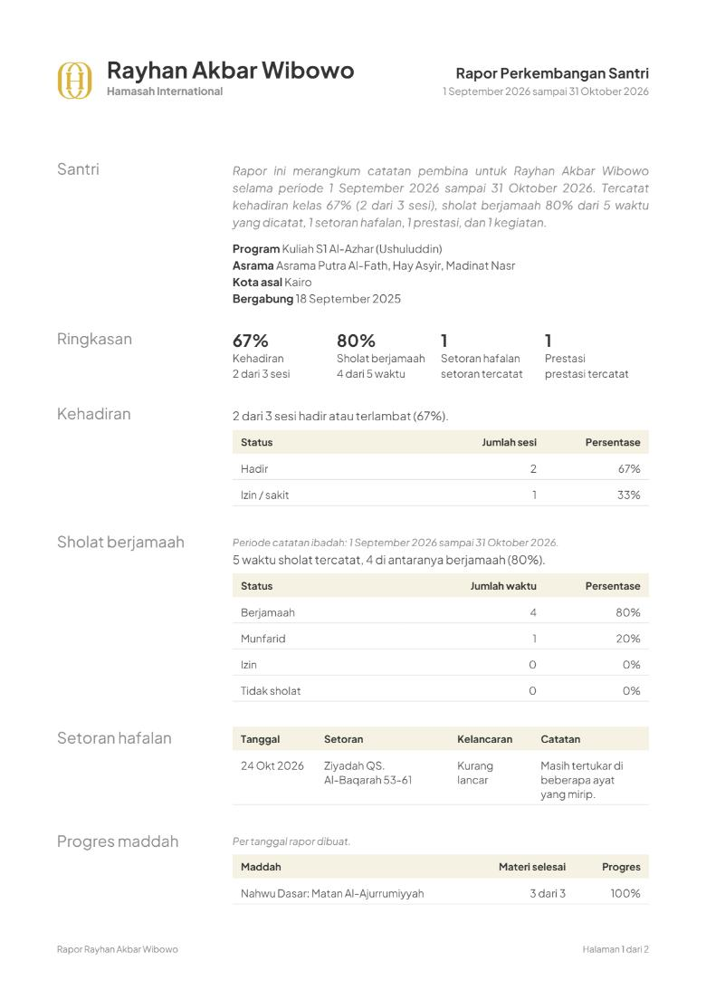
Wali tinggal pilih periodenya, lalu unduh. Formatnya mirip CV, dengan tabel untuk kehadiran, sholat, hafalan, dan maddah. Selain itu ada prestasi, kegiatan, evaluasi pembina, dan catatan disiplin. Kalau ada bagian yang belum ada catatannya, ditulis kosong apa adanya, tidak dikarang.
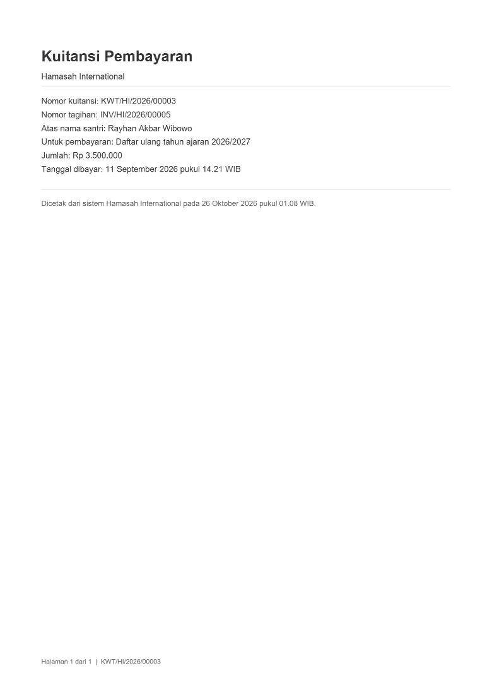
Begitu tagihan ditandai lunas, kuitansinya bisa langsung diunduh, baik oleh keuangan maupun wali. Isinya nomor kuitansi, nomor tagihan, nama santri, jumlah, dan tanggal bayar. Kop surat, nomor rekening, dan nama penanda tangan bisa diatur di menu Template.
Biar jelas posisinya sekarang. Kolom kiri sudah jalan di hamasah.vercel.app. Kolom kanan tinggal satu langkah lagi, dan sudah jelas siapa yang pegang.
Pilih perannya. Di kiri ada menu yang muncul di akun itu. Di kanan ada apa saja yang bisa dibuka, langkah-langkahnya (bisa diputar satu per satu), dan apa yang memang tidak bisa dibuka oleh peran itu.
Ini juga screenshot asli, dari layar laptop. Tim di kantor dan musyrif di asrama pakai aplikasi yang sama.
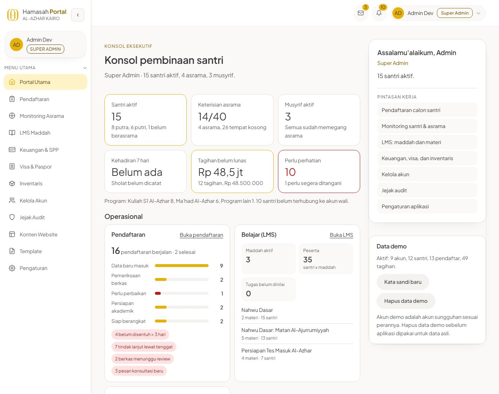
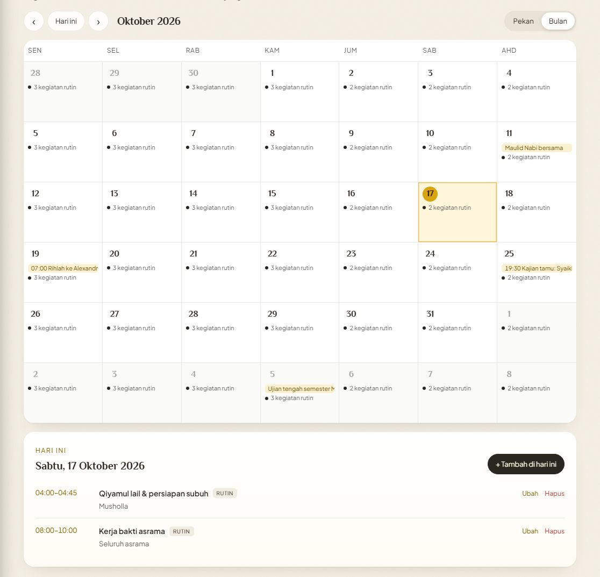
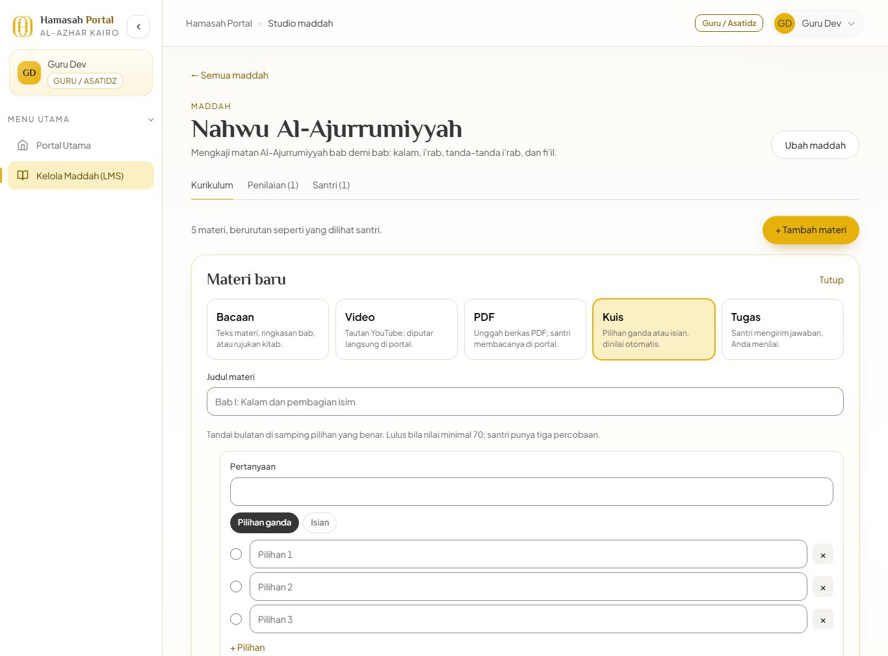
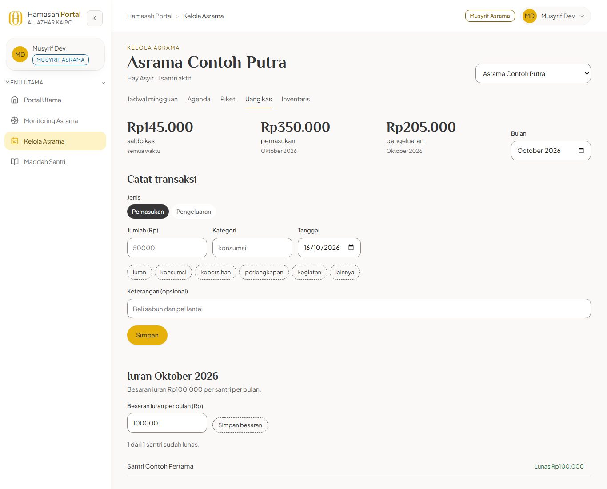
Tiap tahap dikerjakan di bagian aplikasi yang berbeda. Siapa yang mengubah dan kapan, semuanya tercatat.
Isi formulir, setujui kebijakan privasi, lalu dapat kode akses.
Petugas mengecek dokumen dan mencatat tindak lanjutnya.
Jadwal berangkat ditetapkan, visa dipantau.
Kamar, jadwal, piket, dan uang kas.
Kelas online, absensi kegiatan, dan setoran hafalan.
Lihat perkembangan, rapor bulanan, dan tagihan.
Tagihan yang sudah dibayar ada nomor kuitansinya. Catatan pembinaan ditulis langsung oleh musyrifnya. Asisten AI-nya juga menjawab dari materi Hamasah sendiri.
Wali dan santri hanya bisa buka data santri yang terhubung ke akunnya. Musyrif hanya asramanya, guru hanya maddahnya.
Kata sandi disimpan dalam bentuk acak. Kalau akun diblokir atau emailnya diganti, sesi yang lama otomatis keluar.
Paspor, ijazah, dan dokumen lain disimpan di penyimpanan privat. Data kesehatan baru dinyalakan setelah kebijakan privasinya siap.
Asisten cuma menerima pertanyaan dan potongan materi. Untuk catatan musyrif, yang dikirim hanya cerita dan nama depan santri. Asisten Hamasah mengganti nama santri dengan alias, dan tidak pernah membaca database langsung.
Koreksi tagihan, pembatalan, unduhan kuitansi, dan perubahan status tercatat siapa yang melakukan dan kapan.
Sistem cuma menyiapkan isi pesannya. Yang mengirim tetap petugas, setelah dibaca ulang.
US$5–10
Itu sudah untuk asisten belajar, asisten website, cerita AI musyrif, dan Asisten Hamasah. Batas pemakaian per jam dan per hari sudah saya pasang dan dihitung di database, jadi tagihannya tidak bisa membengkak tanpa ketahuan. Kalau kuotanya habis, asisten tetap menjawab pakai jawaban yang tersimpan.
Semua kode aplikasi beserta riwayat perubahannya saya serahkan ke Hamasah lewat GitHub, termasuk panduan menjalankan dan merawatnya. Jadi siapa pun yang nanti ditunjuk Hamasah bisa melanjutkan tanpa mulai dari nol.
Aplikasinya sudah menyediakan tempat untuk semua ini, tapi angka dan aturannya wewenang pimpinan. Sampai diputuskan, sistem memakai pengaturan sementara yang aman, dan semuanya bisa diubah dari dalam aplikasi tanpa mengubah kode. Cukup satu pertemuan sekitar satu jam untuk membahas semuanya.
Rumus nilai A, B, dan C di rapor bulanan, bobot tiap indikator KPI musyrif, dan bentuk penghargaannya. Rapor tidak bisa terbit sebelum pengaturannya dikonfirmasi.
Bagian mana yang dikembalikan saat santri keluar, pembelian saja atau juga pemasangan, dan berapa potongannya. Sistem sudah memastikan refund hanya untuk yang ikut patungan.
Apakah tautan pembayaran Sendit dipakai untuk semua wali, dan apakah pengingat tetap lewat WhatsApp manual atau mulai otomatis lewat layanan pengirim berbayar.
Foto kegiatan sudah hanya untuk santri dan wali asramanya. Yang perlu ditetapkan: siapa yang memberi izin, dan foto seperti apa yang boleh tampil di website.
Tarif tiap program dan kontak yang dicantumkan: email lembaga dan nomor WhatsApp admin yang dipakai.
Kapan catatan kesehatan dinyalakan, berapa lama data pendaftar yang batal disimpan, dan sejauh mana AI boleh dipakai, termasuk anggarannya.
Langkah pertamanya: siapkan akun dan data, lalu minta orang yang nanti memakainya untuk mencoba. Kalau Ust. Ifdoni dan Ust. Aji sudah setuju, kita mulai dari satu asrama dulu.
Kembali ke atas